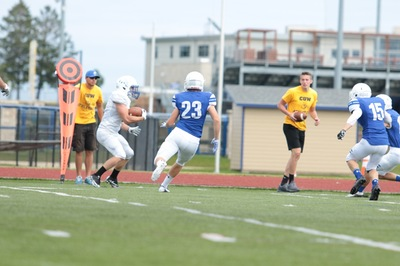

Sports were a huge part of my life in both high school and college. I was a very elite athlete and enjoyed every minute of it. I won many awrds as well as many team accolades. Sports will always be a part of my life no matter I am playing or coaching.
I played football all 4 years of high school. I broke my hand my sophmore year and was forced to miss 3 games. I made varsity my sophmore year and started at cornerback. My junior year I started at cornerback and wide reciver. I was also named all confernce. My senior I was voted a team captain and started at both corner and wide reciver. I was again voted all conference as a cornerback.
I played hockey all 4 years of high school. I was one of two freshman to make varsity my first year. I was named captain my junior and senior year. I was named all conference my sophmore, junior, and senior year. I was also nominated for the Wisconsin Holby Baker Award which is given to the states most exceptional leader. We qualified for playoffs all four years but were eliminated the first round every year but my senior year when we beat Cedarburg in the first round, Beaver Dam in the second round, and then eventually lost to state runner up Arrowhead.
I played baseball for 3 years. I took my junior year off to play hockey year round. In my three years I played JV my freshman and sophmore year. On JV I was 2x batting champ for holding the teams best batting average. I played in all 26 games both years. My senior year I made varsity but appeared in limited games as I was recovering from a shoulder injury. My team was ranked inside the top 5 in the state for most of the year and we eventually lost in the state quarterfinals to Homestead High School. I was again batting champ for holding the teams best batting average and was also given Most Valuable Teammate award.
After my sucsessful high school sports I was recrutied by many college football teams as well as many junior and college hockey teams. Ultimately I made my descion to stay close to home and play both football and hockey at Concordia University of Wisconsin.
In my freshman year at Concordia University I made a postion change and started playing free safety. I got to control the field and keep everything in front of me. I was ranked 2nd on the team in takles by a freshman with 13. I was also ranked first on the team for freshman in pass defletions with 3. I appereared and played in all 10 games. I also was a captain of the JV team and was the team leader in takles and pass defletions.
I played hockey all 4 years of high school. I was one of two freshman to make varsity my first year. I was named captain my junior and senior year. I was named all conference my sophmore, junior, and senior year. I was also nominated for the Wisconsin Holby Baker Award which is given to the states most exceptional leader. We qualified for playoffs all four years but were eliminated the first round every year but my senior year when we beat Cedarburg in the first round, Beaver Dam in the second round, and then eventually losing to state runner up Arrowhead.